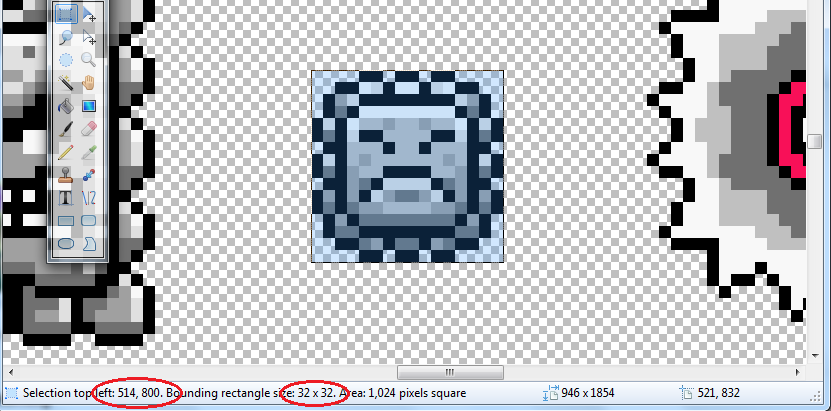
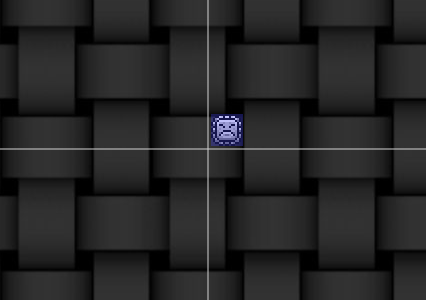
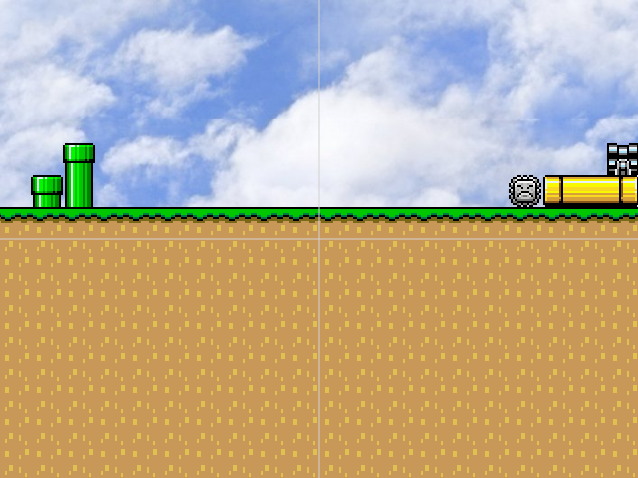

Implementing A Custom Sprite into SMW
So you want to create your own sprite? You have the functionality in mind or maybe you just want to get into the subject of what your sprite is going to do and/or look like, but you are at a loss of thought of where to get started.
Unsurprisingly, the implementation of a custom sprite will require some knowledge of JavaScript. It is advised to store any similar custom sprites you make within one "sprite pack" (just a javascript file). All sprites made should be appended on to the SPRITES object.
To get started, you'll need to know the basic outline or
"skeleton" of a sprite. Nearly every sprite is going to essentially
include:
An initialization (for loading your sprite's texture, and
setting certain variables that your sprite will possess every time)
A function that is called every frame and updates different
aspects of the sprite
Graphics based upon different events
Variables specific to that sprite (for timers, effects, etc.)
A function that handles collision between your sprite and
with blocks or other sprites
Let's make a new sprite called thwump. It is going to have a thwimp graphic from the defaultSprites sprite pack, and bounce the player upwards when he lands on top of it. We will have it be responsive to gravity, and interact with blocks, but not other sprites (besides the player).
To start, we'll append our sprite on to the SPRITES
object, so that the editor can detect its existence and append it onto the list
of available sprites.
SPRITES.thwump = function(op)
{
var s = new Sprite(op);
// (More stuff to do here)
return s; // Return a new instance of our sprite
}
We'll assign it a couple variables that every instance of
it will have...
s.width = 32;
s.height = 32;
s.type = "thwump";
The type of your sprite MUST match the name of the sprite
within the SPRITES object. Now, we need to add a collision box for the
sprite. This is done through a Geometry. Within a Geometry is the x
and y of where to start the collision rectangle, and the width and height of
that rectangle, all relative to the sprite. In this case, and in most
cases, this is going to surround the entirety of the sprite's graphic...
s.geometry = new Geometry({ x:0, y:0, width:s.width, height:s.height });
From here, we'll add in variables that this sprite will
possess. Variables that are needed in this case include a a move speed, a
fall speed, and a kind of terminal velocity for the fall speed that caps it at a
certain value. By relative establishments, my fall speed will be .4, my
terminal velocity for my fall speed will be 9, and my move speed will be .5.
s.speed = .5;
s.fallSpeed = .4;
s.fallCap = 9;
From here, we'll need to focus on the nearly most
important thing within the sprite: graphics. Our sprite is going to have a
fixed graphic, so it won't be too tricky to implement.
The only twisted bit is initializing the texture itself. The texture pack
you are instantiating could have already been made. A function included
within the engine called getTexturePack takes in a file path
(relative), and returns either null or the texture pack within the game with
that file path. So, we need to check to see if the texture pack (or sprite
pack, however you want to label it) with our graphic exists, and set our
sprite's texture to use either that texture pack or create that texture pack if
it does not exist yet.
The defaultSprites sprite pack mainly uses the file Packs/defaultSprites.png
for its graphics, and that is the file containing the thwimp graphic, so we'll
do just that with that file name in mind.
var tp = getTexturePack("Packs/defaultSprites.png");
if (tp)
s.texture = new Texture({ type:"texture", texturePack:tp,
animation:[] });
else
{
tp = game.texturePacks.add(new TexturePack({
source:"Packs/defaultSprites.png", callback:function(){
s.texture = new Texture({
type:"texture", texturePack:tp, animation:[] });
} }));
}
You'll notice that in both cases of creating the texture,
we leave the animation (that is the graphics reference in the form of x1,
y1, w1, h1[, x2, y2, w2, h2, ...]) as blank. We will set this within
the sprite's update function.
For nearly any sprite, we'll need to have a stored list of its graphics bases
upon different scenarios (example: mario's walking animation if he is walking,
jumping animation when jumping, etc). I'll store all of these different
animations (though in this case, there's only one graphic) within an object that
I will call poses.
var poses = {
fixed: []
};
Now we'll need to know where this graphic is located within the file, and the dimensions of it. To do that, we'll open up the image containing the graphic for our sprite, and spot these attributes within the image editor (I use Paint.NET).

The two circled bits are what we will use for our animation array values:
var poses = {
fixed: [514, 800, 32, 32]
};
Now we just need to attach this graphic to our sprite so
that we can view the results! Within our sprite's update function, call a
new function, called doAnimation. This will handle presumably the
animation setting of our sprite.
function doAnimation()
{
}
s.update = function()
{
doAnimation();
}
In the doAnimation function, we can call a
function which is part of sprites themselves labeled as setAnimation,
and this takes in an object as a parameter consisting of options pertaining to
setting the animation of a sprite.
Within this object can be:
flipX - Whether or not to flip the x graphic on the
sprite. Leaving this as null or not setting it will cause the sprite to
remain with its current flipped settings.
flipY - Same as flipX, but acts vertically instead
of horizontally
anim - This is important for actually drawing the
sprite. This will set the sprite's animation to the one passed in (hence
the function name)
I like to create the options separate from calling the
function, just in case I have to set it optionally with multiple graphics.
var op = { anim:poses.fixed };
s.setAnimation(op);
Now, we should be able to go into our editor (assuming you've included the file with your sprite as part of the editor), and see that in fact our sprite is available in the list of sprites we are able to add. And, we can add it and view the thwump as it is right now; just a graphic. Still pretty sweet though!

If you are wondering what your code should look like (even if what you have right now works for you), you can check out the sample here.
So, it's time to actually add in some interaction for this thwump! I put together a small sample level in order to show off our sprite once it is finished:

You can find the source file code to this level by clicking
here.
I am going to skip the walkthrough on making this level
playable on the main game since it is in the other tutorial on using the engine
and you should already know how to do it or should be able to look there if you
do not.
You should be able to just walk right through the thwump as if it were not even
there. However, that will change soon. It's time to add in sprite
movement and interaction.
So, let's put some velocity on this sprite and get it to
move.
In its initialization (after all of the sprite's variables are being set), put:
s.vx = -s.speed;
This will cause its velocity to be the speed we set earlier.
Reload your game. The sprite should be slowly moving to the left.
So, it's time to add in collision. All blocks that
the sprite collides with are passed through to the function collided,
built in to each sprite.
s.collided = function(b)
{
// b is the block s has collided with
}
We can retrieve specific information about the type of
collision that has occurred by calling the function (not built in to each
sprite) getCollisionInfo. It takes in two parameters: the sprite
to look at and the sprite to see how the viewed sprite has hit it. It
returns a set of variables within a resultant object: top, bottom, left, right;
corresponding to the collision on those specific areas.
Since we want our thwump to interact fully with solid faces, we'll need to
implement collision actions for type 'ledge' and type 'solid'. For ledge
and solid interaction, only ground collision should be implemented. And,
in addition for solid, ceiling and wall collision should also be added.
Now, when implementing a specific collision course of action, you must keep in mind that each is very similar. First, we need to place the sprite just before where its collision point is (i.e. a sprite colliding on the left side of the wall should be placed just a tad left of the left side of the wall). Then (or before then, it does not really matter), we need to clear and/or set accordingly the velocity relating to that specific collision. A sprite colliding with a wall should have its x velocity set to zero or flipped in our case (since our sprite is remaining in constant motion). Finally, any flags relating to that specific collision should be set. The onGround flag for the player for example is set while he in on the ground. All flags relating to a sprite should be cleared at the end of its update code.
So, with all of that in mind, here is the collision code that we need to implement:
var inf = getCollisionInfo(s, b);
if (b.type.replace(/solid|ledge/g, "") == "")
{
if (inf.top)
{
s.vy = s.fallSpeed;
s.onGround = true;
s.y = b.y - s.height;
}
if (b.type == "solid")
{
if (inf.bottom)
{
s.vy =
s.fallSpeed;
s.y = b.y +
b.height + .01;
}
if (inf.left)
{
s.vx =
-s.speed;
s.x = b.x -
s.width - .01;
}
if (inf.right)
{
s.vx =
s.speed;
s.x = b.x +
b.width + .01;
}
}
}
Since we have implemented ground collision and response,
we also need to implement gravity. Within your sprite's update function,
make a call to a new function, and call that new function doLerp.
Here, we will add our sprite's fall speed to its y velocity, and if its y
velocity is greater than the terminal y velocity, we will cap it.
s.vy += s.fallSpeed;
if (s.vy > s.fallCap)
s.vy = s.fallCap;
Your sprite code should now look like
this.
Run your game again, and your sprite should collide and interact with the ground
and walls! It should also switch directions when it hits the green and
yellow pipes. If it were to somehow hit a ceiling (given negative y
velocity), it would interact with that as well! Our sprite code is working
beautifully.
Lastly, it is time to implement the sprite's interaction with the player. Unlike the collision code (though the collision code is not that tricky to understand), this concept is pretty straight forward. First, we want to check sprite collisions with our sprite. Then, we want to see if the sprite that has collided with our sprite is the player. Following that, we want to get the collision info between the player and our sprite. If the player has collided with the top of our sprite, then we will give it some negative y velocity as a boost upwards.
Now, the only "tricky" part about this is the fact that checks for sprite collision between an instantiated sprite and all other sprites are not automatic, so we'll have to do it ourselves. However, this does not mean that we have to implement the functionality of the checking ourselves. Calling the function doSpriteCollision which takes in the parameter of the sprite you want to check collisions for automatically searches for and calls the sprite's collided function with the sprite it has collided with. How do we know it is a sprite? Well, it calls the collided function with another parameter, set to true when it is a sprite.
Once we know that it is a sprite that is being collided with, and we've checked to see if it is the player, we need to get the collision info between the player and block. Why? Collision checks depend on velocity of sprite A, meaning the collision between sprite B and sprite A respectively is going to return different information than the collision info between sprite A and sprite B.
s.collided = function(b, isSprite)
{
var inf = getCollisionInfo(s, b);
if (isSprite)
{
var binf = getCollisionInfo(b, s);
switch (b.type)
{
case
"player":
if (binf.top)
{
// Yet to do: Give the player some velocity in y
}
break;
}
}
else
{
// [Other collision code we had to check between our sprite
and a block]
}
The only thing left to do is set the player's y velocity
to a value after all of this checking is performed.
b.vy = -12
I used -12, though you may set it to any value you like.
Done! That is our resulting sprite! Your finalized code should look something like this.
So that's essentially it. Just apply this sprite creation logic to any and every sprite that you have in mind to make. The sky is the limit!